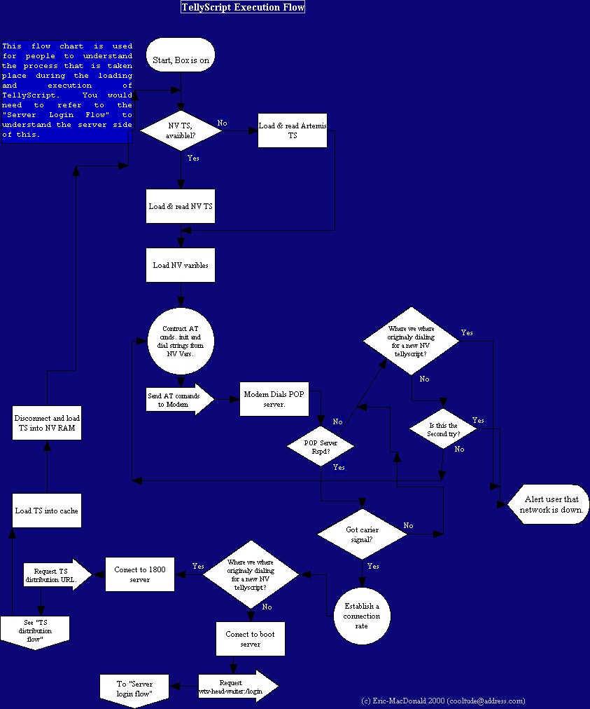
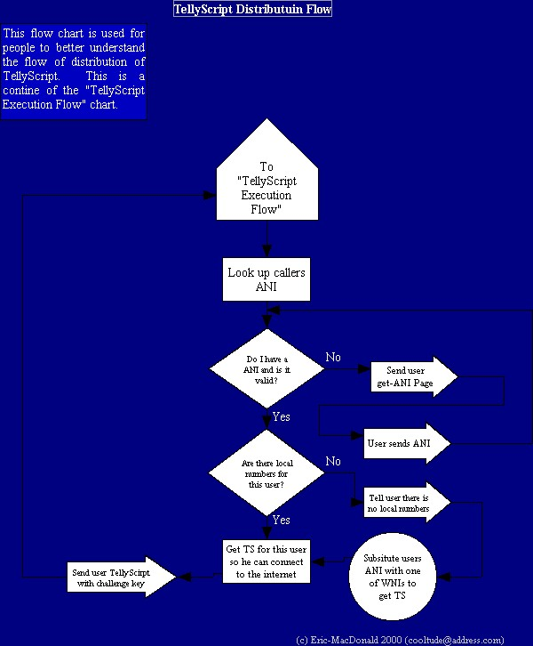
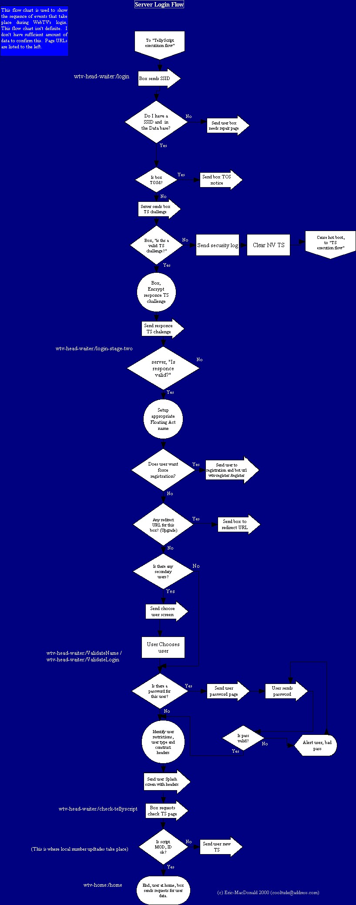

YOU MAY NOT CLAIM ANY OF THIS AS YOURS. I HAVE WORKED TO HARD TO DESERVE ANY PIRATING OF MY THEORIES. I MUST STRESS THAT ANY USAGE OF THIS THEORY(S) WITHOUT MY PERMISSION I WILL NOT PERMIT. <h555>THANK YOU</h555> ===============================================================================
This is a TellyScript Execution Flow chart.

This is a TellyScript Distributon Flow chart (To Do: Update this image, more information has been found about AD and registration).

This is a Server Login Flow chart.
